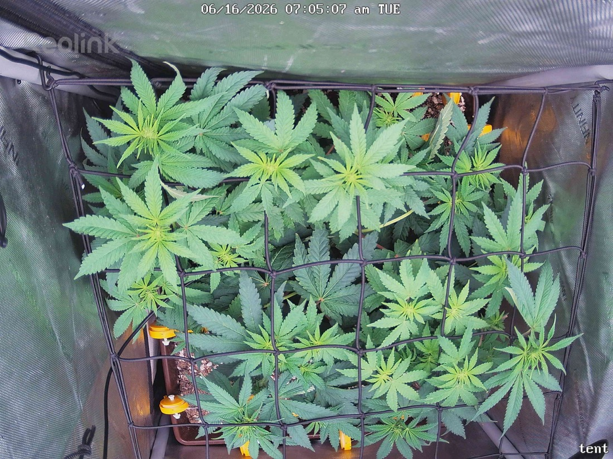

← All reports
Jun 16, 2026
Tue Jun 16, 2026 — 7:05 AM

Prognosis
Here's the day-over-day read (papaya crush, flower day 13, ~700 PPFD center, scrog in):
- Canopy fill / spread: Noticeably more even coverage across the net vs. yesterday. Colas are filling the squares more uniformly — your 6/14 horizontal training + scrog tuck is doing its job. Camera angle is a touch more top-down today, which exaggerates the "fuller" look, but real lateral expansion is there too.
- Color: Uniform medium-to-deep green across the canopy. No interveinal yellowing, no edge burn, no purpling. Healthy for living-soil flower.
- Posture: Leaves flat and turgid, praying tips on the upper colas. No tacoing, no clawing, no droop — soil moisture looks dialed (1.5gal vermicompost tea on 6/15 landed well, no overwatering signs this morning).
- Light stress: None. No bleaching or burnt tips on the top colas closest to the SF-2000 at 700 PPFD. Plant is tolerating the bump cleanly.
- Pests: Can't resolve mite stippling at this resolution, but no new visible damage, no webbing, no fresh chewing. Consistent with your 6/14 "couldn't find any mites" note — the Green Cleaner cadence appears to be working.
- Phase check: Right on track. Day 13 since the 6/3 flip — you're in the flowering stretch, which is exactly the vertical/lateral push you're seeing. Expect stretch to taper around days 18–21, then bud sites set and fatten. No stall.
Suggested next actions:
- Stay on the Green Cleaner schedule (next round per your 3-day cadence) until you've cleared 3–4 applications past the last sign — don't stop early on the egg-hatch cycle.
- Keep tucking new growth under/through the scrog daily during stretch to hold the flat canopy.
- 700 PPFD is fine; you can hold here and consider 750–800 once stretch slows and flowers are set, watching top colas for any tip bleaching.
Overall: Healthy, vigorous, well-trained plant tracking right on schedule for flower day 13 — no action needed beyond continuing the mite protocol and daily scrog tucks.